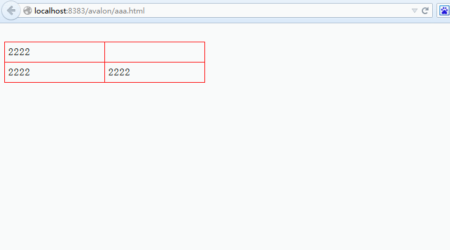
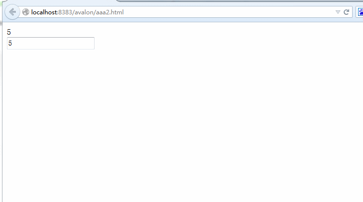
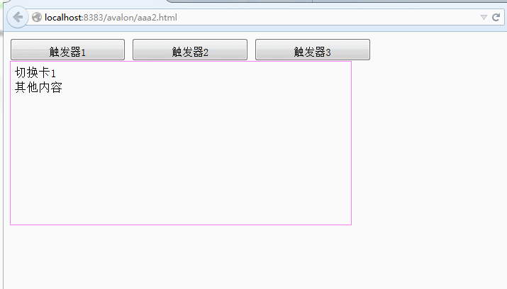

显示隐藏处理（ms-visible）
avalon通过ms-visible="expr"实现对某个元素显示隐藏控制，它的效果类拟于jQuery的toggle， 如果它后面跟着的表达式为真值时则显示它所在的元素，为假值时则隐藏。 不过想显示一个元素不是直接 display:block这么简单，众所周知， display拥有inline, inline-block, block, list-item, table, table-cell等十来个值， 比如用户之前是让此LI元素表示inline-block，实现水平菜单效果，你直接display:block就会撑破布局。 因此元素之前是用什么样式显示，需要保存下来，当表达式转换为真值时再还原。
<!DOCTYPE html>
<html>
<head>
<title>TODO supply a title</title>
<meta charset="UTF-8">
<meta name="viewport" content="width=device-width">
<script src="avalon.js"></script>
<script>
var model = avalon.define({
$id: "test",
toggle: false,
array: [1, 2, 3, 4]
})
setTimeout(function() {
model.toggle = true
}, 3000)
</script>
<style>
table {
width: 300px;
border-collapse: collapse;
border: 1px solid red;
}
td {
padding: 5px;
border: 1px solid red;
}
.menu {
display: inline-block;
*display: inline;
*zoom: 1;
width: 140px;
padding: 5px 20px;
text-align: center;
margin-left: 1em;
border: 1px solid greenyellow;
}
.btn {
padding: 5px 20px;
margin-left: 1em;
display: inline-block;
}
</style>
</head>
<body ms-controller="test">
<table ms-visible="toggle" border="1">
<tr>
<td>1111</td>
<td>1111</td>
</tr>
<tr>
<td>1111</td>
<td>1111</td>
</tr>
</table>
<br/>
<table border="1">
<tr>
<td ms-visible="toggle">test</td>
<td>2222</td>
</tr>
<tr>
<td>2222</td>
<td>2222</td>
</tr>
</table>
<table border="1">
<tr ms-repeat="array">
<td ms-visible="toggle">{{el}}</td>
<td ms-visible="toggle">{{el+10}}</td>
</tr>
</table>
<div style="display:none" class="menu" ms-visible="toggle">item</div>
<div style="display:none" class="menu" ms-visible="toggle">item</div>
<button style="display:none" class="btn" type="button" ms-visible="toggle">btn</button>
<button style="display:none" class="btn" type="button" ms-visible="toggle">btn</button>
</body>
</html>
上面提到表达式，是指属性值可以存在加减乘除运算与函数。我们再看以下例子：
<!DOCTYPE html>
<html>
<head>
<title>TODO supply a title</title>
<meta charset="UTF-8">
<meta name="viewport" content="width=device-width">
<script src="avalon.js"></script>
<script>
var model = avalon.define({
$id: "test",
num: 5
})
</script>
</head>
<body ms-controller="test">
<div ms-visible="10 - num > 0">{{num}}</div>
<input data-duplex-event="change" ms-duplex="num">
</body>
</html>
最后我们做一个实用的例子——切换卡——来结束本章节吧。
<!DOCTYPE html>
<html>
<head>
<title>TODO supply a title</title>
<meta charset="UTF-8">
<meta name="viewport" content="width=device-width">
<script src="avalon.js"></script>
<script>
var model = avalon.define({
$id: "test",
currentIndex: 0,
toggle: function(index) {
model.currentIndex = index
}
})
</script>
<style>
button {
width: 150px;
height: 30px;
line-height: 30px;
text-align: center;
}
.ms-tabs {
border: 1px solid violet;
width: 430px;
padding: 5px;
height: 200px;
}
</style>
</head>
<body ms-controller="test">
<button ms-click="toggle(0)">触发器1</button>
<button ms-click="toggle(1)">触发器2</button>
<button ms-click="toggle(2)">触发器3</button>
<div class="ms-tabs" ms-visible="currentIndex === 0">切换卡1
<br/>其他内容</div>
<div class="ms-tabs" ms-visible="currentIndex === 1">切换卡2
<br/>及司徒正美</div>
<div class="ms-tabs" ms-visible="currentIndex === 2">切换卡3
<br/>最后一个了</div>
</body>
</html>